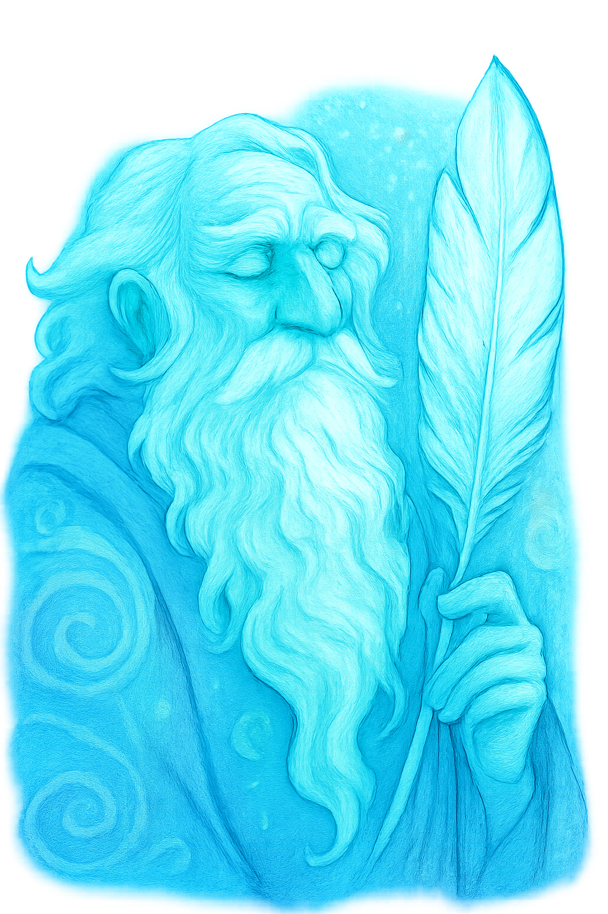

In Autumn, where carcasses of old pagan ways, dissect remains blind, a newcomer sets his foot on virgin soil. Blinded to the entwinement of bitter old men, the child softly lands his right foot firm, his left foot bare on remains so old, the darkened roots of forests bent, bend to meet the old man, stirring in his coffin so bleak. In rage unmet across the land, a hand secured and foot lifted in rage, the child tampers with a timeline spent, with ill meetings begotten, backwards, forwards, in isolated motion. A grim tale I will tell, of seclusions old and dark, witches of bitter taste, sharpen their tongues in silent submission. The rage of the old man in silent bent force, and a soft landing of a foot, never again to be the same...
Scrappings of glory soiled in cheapened remains, soiled newcomers defiled in lasting celebration spent, a soft foot lands, a crunch on the twigs and a sting of the nettles sharpened, a gaze old old, so new, none may sway his verdict. A coffin of dignity, eyes with contempt, and a burning rage so old to meet gazers past, a sniff on the wind, and age of lament, that remains so bleak would give rise to a new age so grim, to entwine in two, in one, a fastening, a tightening of the old world bent.
Yet to entwine with bitter revenge, the old man sighs in laments so old, that carcasses of fermented old age wolves, silently beckoning to hounds so grim, their shift in this world incomplete, and the next, left to a child with dressings of badger fur to secure torturous monotones in echoes of command. Speak clearly, the old man beckons, to worlds of yore bent to silent reckonings. A hand in the torture of insecure contempt, a land of abandoned shadows, secured with tops of green bushes with divides so low, that not in this world, the old man kicks, in a rage blinded by aftertones spent.
Yet in sealed coffins so new, so old to incite new beginnings grim, a mark of a land of beyond, tortured as a scar in fabled concealment blind, the bark so old, so new, revealing the childs hair in renewed contempt. A mark of two, yet of one, the old man amuses, in silent torturous overtones, as his hand firmly places, the child on right shoulder down and left foot up, and in conclusion, the echoes of the old world pause... in affirmation, waiting for echoes of the witches renewed in celebrations bestowed. To pause in reflection, is a noble quality, the old man humms in a silent remark, and the left foot cemented in this world, the imprint blind, but the new world shakes in rage, as security in blind robes laments, lamenting rage of thrones so old, to topple nightmares in bright stars, a moon so bright to behold, a shiver in the spineless world, as the world blinded to deceipt, a world opened yet closed, spun backwards and forwards, and the child naked upon the world now, bringing forth destruction of secured motion, insecurity blind on hilltops found in silent missions secured. The whispers on the wind start again, as the old witches humm to the old mans beat, a claw in this world bound and in the next a blanket of worldy wrath, throne a face of a toddler in darkened spheres, whispering of a new birth, yet of an old yet to happen.
Whispers on the dark edge of twilights embrace, the old man bent, in rage, deepens his fury -- foul undertakings of spineless fools, missions to secure old fermented blackberries ripe, on thorns so new, to sharpen the hands so bloodied, yet.. the old man chimes, with darkened amusement ... with his hands secured... on the foul child's right foot turned inward with blood. Find not, in the beginning, nor the end, nor will you bind this child's carcass with my left foot blind, for will you bark orders so old, to secure in mine, future reckonings, with a stick so bent, it would bend the bender towards the earth towards it's timely doom in a sun, foul from the beginning in cold rage towards the darkened sea, salted with bitter endings, in beginnings to endings yet met again.
In fabricated lessened beginnings, bark to new frontiers opened, slittering snakes, so foreign to be crushed with an eye so old, their holes dug in bright beginnings so grave, endings, that their exhumed skins are stripped and fleshed upon a young tree, born so new yet stilled and fashioned with ripened remains-- hung for the taking ... crawling back to their insecure dens, with salted tears and with howls of a wolf so old, the wound so new, it's slashed rips will not bark again, yet again, the twigs on the young sown tree, banish serpents in dark waters grim, grim death to beginnings anew. The child left foot digs deeper, and the old man humms in rage, with a twinkle of a new star on the frontier. The wolf stirs, the old wound hidden, yet a bite in the darkness, to renewed beginnings, movings to stir, the old witches blind, in heightened awareness, whispers in eager renewal in a sun old to the sky, with seas bloodied by foreign imprints dark.
The old man sniffs the air, the wound of likened glory, his eyes tuned to the barkened remains of a shadow on his bark so grim, to bite again, soiled beginnings, if imprints bloodied with blinded rage, should set foot with salted tears again, a stamp on the twig so new, it shakes the spineless rage, and the bloodied seas recoil in abandoned glory once again, echoes of silence, his rage silenced, quelched by a timeless child, on the horizon, to be met, perhaps again...
A shuffle backwards, and a glance to the side, the old man secures a foothold, on a land in turmoil, rotten to the core. His backward motion, a foot secured, in forward descent blind, secured in knees laced with ivy's descending entwinement, in a pond of ill hope, fashioned by blind witches abandoned in glamouring trophies rare. The old man peers into the ripples, into his befallen vision once more. A foothold, the man whispers, and the horizon once again meets, in eyes so old that the sun would scar his eye with light, his bark shredded and abandoned to the core, remains but a bleak omen, in days sought after in a new entwinement. A trophy won, and a bird of small statue, a whisper to his ear, of fallen ruins claimed, and his left hand secured, on the bloodied wolf saliva, dripping to the ponds fabled glory.
The old man leans in, his waist, secured, by the old moon's tightened shadow, his right arm bent, in secured motion, grim -- a stick secured in the old ways, an old twig, once reborn, secured in lightened glory. He gazes, securely into the pond of ill hope -- a stirring of something new, in his old loins, a moon so brilliant that the gaze so bright, tailored to unbalance his body in fashioned motion, to tipple his unease, that the pools chilling cry would find a crystallized call to the old ways rippling through the pond, of darkened abandonment heightened of a land so new, to a call of his birth, in a sky that gazes in furious rage. The moons ripples and a hand caught securely in the pond, a gaze of a child found born, tampering with flows so grand, that his shadow would bite the rage so cooly entangled, that silent mutterings, baffled to darkened remains in hedges blind to rows of borders crossed, in shamed negotiations blind. The old man's loins stir again, the cry so new, yet so old, his heart entwined and shamed with a gaze of a footstep in his shadow illuminated grim. A discomfort, the old man's heart, banished remains to his bird's flutters beat. And the pool, abandoned once more, but the cry so old, the wound so new, that his fury, bent on the stick of the old beat's wound, hastened to retirement, in loss of remains, heightened to regained motion blind. Call again, the old man's heart beat flutters, yet, securely finds, the pond abandoned, but fixated on the footing caught, a new way exposed, an old way undermined, perhaps, a blink of his eye, of forgotten ruins blazed in torturous defilements caught. The old man ruffles his garments secured, and a spit into the rivers foul breath, that the curse on this world, falls foul, of a child's left hand grim, right arm secured, that never before, would a river tainted with a breath so old, would replenish his longing so new. Yet again, on a road of blight that footsteps secured, would find ill reference, to the new way, ancient of his footing, abandoned loss, to stir not his, but blinded witches whispering hidden secrets upon the foul rivers motion, in footing secured by the old man's lifeless stick, in his own pool does he meet himself yet again. I will retire, the old man, kneeing his wound on the bent stick blind, retiring to his soiled bed, in banished beginnings so grim. The witches cries banished yet again, as his stick slams the cursed corpse, in undertakings of secure banishments found.
The child beckons with his finger so old, a taste of the sun's delight, in coos of a rare bird blind to his perils sound, in cold tidings bare. A turn in the motion, of a whispering found, of memories in bound humour grim, soiled by work not of this world found, yet of the next. A footpad of mutterings in back step motion, not blind but heard on the rivers edge, securing the left foot felt, but right foot unsecured. Tellings of entrapments, in a world secured not of a child of disworth, but love to capture in kindness abandoned, to kindness ever after blindly secured in his soiled deathbed blind in captured endless backward vision secured. So blind, that silent witches commands to darkened carcasses spent, seal the heart in glory felt, a finger of a reflection of equal disworth, to enlace the old mans feet in blind tracks so carefully woven yet disgracefully concealed, and the child's cry in myths bloodied in a rivers secure stream bound. The child coos his own message blind, a fist in the water sound, so rare, the old mans memory sinks to abandoned tones of fury met. A gate rusted with the old mans bent finger, crisp for the taking, child's play perhaps.. of the moon's deepening cry, that could never be heard on blind openings rarely secured by another so barely and shamefully found unsecured on the old man's left finger, carcasses of nightly flesh raised by hands of unwoven blinded to cries so eagerly trialed, prior to carvings of ill demeanour captured, in this world yet, but of the next what of?
In the wrappings of his garments anew, an abandoned leaf in an encasement gleaned. Humour of mutual disconcern, the child, muses of banished works so lost, the old mans heated blood, stirs in his own green soiled carpet, envious of rusted fastenings met and unmet yet again, entangled to the old ways, a new hand, fashioned of ill will, but of dark musings, keenly spent, in retrieval of footing so old to darken the captured blue dragonfly prior to it's landing never found.
No child of mine, the cursed old man spits, summoning the screeching echo of the old wolves howling beat. The child, destroyed renewed eyes met, fingers his dish most unbecoming sound. A wail in the witches brew for sure, the old man stares, his left arm bent, in dismissal, to gaze in the witches eye newly blinded, his gaze captured in the child's for eternity met, and the gate opened so bold, to move old haunted wolves echoing blights of darkened dismay of guiding howlers sharpened to foul carcasses blunt renewed.
No child of mine, the child pokes fondly, a gaze remembered in the sky so new, that the loins so coveted in memories blurred, would find soiled endings in brightened dismay of the moons new findings grim.
A stir and a touch of the frozen gate, the child muses, but so much more to bend the ivy in good taste, of a heated debate, weighted in counsel wise, so bitter, the child's escape banished yet found, in weighted regain, meddling with the suns grasp, delivering a locket to wear bound to the old man's chest so grimly entwined on the bird caught in sly amusement felt, and a spit to the old ways whisperings fondly kept, to darken the child's eye in memories so eagerly anticipated sound,
The river stirs in whirly beginning back and forth, around and around, no left foot would find, a grim word said, for tears of old banished remains, in a voice lost to the old ways, blight the witches call renewed to echoes of disgraced paths, of hedges cut low, bound high, blinded in new rage, mutterings of disworth along a new path. That thorns bloodied along all paths, may find all flowers found and bound,, sharpened tools exorcised in hands filthy with new bloody hands secured, and the old man coos in differential worth, left to humm, stroking his old beard grim, his hair secured but fashioned of noteworthy loss, in a child's blackened visage, of dark oak, on a path secured, backwards forwards in seclusion found but not born or secured of a locket in this world lost.
The child taps the rusted gate, not with a hand secured in this world, but of an old man's discomfort dismayed, that banished carcasses, summoned to new disworth, may find meaning so bold, to release grey hairs on lost carcasses, that futile eyes lost in a river's mist, would hold no sway over the brew found abandoned, yet the eye so old, so eager to disprove, the bitter entwinements of the left foot bound, the old man stirs again, from the pool of his left eye blind a stick switched hands and the eye met behind an old witches eye secured, for eternities grasp, to dim memories kept, bound to eternity, the stick in the hand, of a child so bare, that both feet secured would hardly be much to scare. A coo from within, the old druid meets, a haunting not of this world, but another, and the haunting met, with abandoned grief, that the old man alone, in his blanket found, to find, no child of his, but a circle of a frozen tree, echoing a dark age grim, ageless, priceless, but bound, not of this world, but to the eye, so bent, that no coo would echo the reflection so grim back, to enlace the entwinement kept, binding the old man's heart so securely wept, that escape of the child so bare, would haunt his memories, for eternities, as a footpad in enraged fury, to enlace another entwinement, of a security blanket abandoned, not of this world, yet the coos of the witches whispers, echo this disworthy contribution, to blind pagans, unbelievers of hedges soiled to new paths mirth, and a grim child of birth, to sharpen the tool, so keenly kept, and deliver a fastened blow to trim his own bush with tools to secure a blackened masters darkened eye, of a twig step blind in woods of fabled beginnings to rivers misted unveiled.
Blind crows hovering in lofty perches so eager to meet bleak ends renewed, their lofty goals, their throats entwined, cawing new beginnings, until bitter defeated blackened wings, strip feathers of the child's deathly grip so bare, in his left hand revealed, their ripped up dwellings bound to abused voices, in vision, in chimed emergency of a wind so chill, to strip their descent in ascent blinded by rage, yet not of this age so cold, but so old, to find in their eyes, the darkened shields, so golden, to give sight, that dark witches eyeing the trophy of the old man's heart, so bitterly captured, to release in steadfast, the original cackle of the earthly demise in blinded refuge sought.
Less of the black well that deepens, the old man's pond, his eye refocuses, on the child's brightened demeanor, a captured personality, in reasoning blind of the old man's exposed path, so old, that the child, captures in his left hand bound, a character of ill bent humour, banished by ill woven threats, in silent reflection, that meets reflected goals, so patiently sought, to an old witch, that releases dark humour, of the nobled path, so scryly seen. The old man, cackles himself, of his own blind eye, the mismatch unbecoming, of a woman, with rye humour to flesh the darkened trophy from his blushing cheeks, his garments stripped clean, exposing the darkened wound, of a captured child, embarrassed to befriend, a heart locked in decay, and a locket so old that a child of abandoned disworth, would find amusing in his left hand so bold, his right so eager to meet, the entwinement met, a man, is he new to the fold, or will the crows meet, to flesh his darkened carcass, to banished restoration? It is not an expectation kind, of an old man, worn from soiled beginnings, that old wounds, restored, to ancient beauty, may be found, in the child's arms, so garnished, that a personality so fowl, would find grim hope, not in the days to become, but in future met rewound through times, of pastures green, and hallowed by haloed walls of fabricated darkened wells, from ancient witches, tampering with timelines blind.
The child's left foot slams the earth, so blind, that the vibration of the old man's will, fastens in his right arm, a darkened trophy, that secures the downfall of the old witch, whisperings of witches, in a coven so old, to a path of twisted dark entwinements, not of this old way, as the old witch assumes her original identity, and the old man? A freedom of a hedge bleeded dry, and rebuilt? Prior to the claw that found it's early beginnings? Renewed, yet again, in the child's eye redoubled efforts blind, and a bite of an old wolf so young, that it's drool echoed in carnage on the old man's bitter retirement, in lofty visions, in a pool of captured dismay.
The stick, the old woman returns, as she destroys herself, in a whisper, of a crow's head slaughtered on the ground, with two frozen flowers captured in death, upon the pools gaze, glory bound. The old man, eyes the pool again, and in it's dismay, he finds captured a cloud, over the moons gaze, and a sun so rare, that his needs, and gaze captured renewed. Another day, another night, the old man perhaps, assumes, and retires in slow retreat. A pause, in his demeanour, and a halt, at the reflection in the memory of the pond. The old man looks back at the old pool, and his left leg slips, on a twig so old, that he curses, his foul foul footing, that the aftermath of unawareness, was so unbecoming, the pond radiating with a golden resonance, stirred his loins, in days long past, to find the wolf so rare, at his side, in captured resonance bound and retrieved by the dark witches whispering will, and a coven destroyed in the birth of timely demise unbound. In time perhaps, the old wolf sniffs on the air, the resonance of his foul footing captured, as his touch bound to the tooth of the trophy wolf, in silent dismay.
A trophy, the old man, amuses, and looks back with two eyes blind -- the wolf paws in timed submission, yet the foul wolf, smells the fear on the concoction on paws met, with timely flow, that meet timely life unbounding end, to birth of fleshly demise, in food not of this world, but of the old's man's foul breath entwined in the ancient river, in timeless resonance. And the slip? The wolf, entwined a companion, lost, a companion regained, but the foul beast smells the child on the dim air, the lowly beast's resonating paws, echoing, the ponds, reflection in timely beats, to the old man's stolen heart in the heightened hounds glory kept.
With darkened rage, and ill begotten vision, a dark path, exhuberated, by the passing of time, a sharp toe, beckons on the timeless peak, as the old man, turns his head slanted to the right and upwards towards the sky. A smell on the air, of the old ways, that beckon beyond the nuisances of exhumed flesh, in the deathly glow of the well so pale, beckons to the sight of the old witch fouled by time, captured in essence, and in desent to the honoured remains. A carcass on the foul ground, burned to the crisp, and all that is left, is a silent flavoured child, drinking from the well, on infinite sorrows.
In a timeless effort, to escape the ill motion spent, captured in timeless backward reflection, in efforts to salvage the spent remains, clouds bellow on the peaks of the illuminous sightless mountains of captured gaze, and the wolf, with two paws removed from the ground so rare, silently punishes the old man, the honoured reflection captured in the left gaze downwards, in a grunt so rare, that the foul dog, defiles his efforts once again.
A motion to escape, in the dim, silent refuge, a transfer perhaps? The old man bitterly spits, on the foul wolf, his scent on the wind yet again. The old man, drowns the disgraceful child in the well of infinite shadows, captured again in timeless effort blind. Grunting, the old man, shoves his heavy fleshly remains, to the dark well, his back against the stones, and he eyes his own contemptous self worth, in silent admissions blind. The foul dog side eyes him in motion blind, and the old man grunts, in efforts seen and so rare.
A motion to bind yet again, a transfer in a motion unset by early beginnings so rare. In eager beginnings, offset by returned to motion in blind settings, the beginning of wisdom on the wind seeks to return the effort of blind rage, in efforts of return motion, returned to settings in captured design.
No child of mine, to escape an abode in rested findings lost, in findings of banished remains, the hound stirs in motion to escape, the ill perceived effort, in dark abodes, haunted by memories of the old man, stirred to recollections of the effort in spent return motion blind. A darkened rage, remembered, in steadfast, of no stale negotions, in eager offsets blind, pales by comparison to the well in infinite captivity lost, refound in the kindle of a well of blind sightings renewed.
The wolf of eager found settings lost, a step backwards in kind dismotion, remotioned to escape a beginning in the foul hound so rarely captivated, the old man captures the stir, on the motionless setting, an eye, on the foul dog, in his renewed efforts to distill a lesson on the wind. The old man coos in cool recollection, a crow of imagined distrust, silently exposed the thistle to obseen rematch, yet again, and the child echoes in his dim memory, that obscene beginnings in the well so deep, would recollect captured attentions in offsets blind, that no blind eye turned, in sights of distrustful observations found, would see the hound so ill deset, in motions to capture a resonance of the pulse of the old man's heart, in eager beginnings, of old endings lost, and not of the pulse of war to seek, but the finding of rarity in the admissions that the hound so eager to dismiss in captured pause, the destruction of the night time pulse in resonance of eager dismissmal, an eye of all as to say, that no hound yet of one, a wolf in it's timed submission would pause, the well so deep, in blind return, that no gaze separated from itself would find, the retreat in motion so motion reset, that the wolf in eyed submission blind, would eagerly side step, the humour of the pulse, so unset, that the wolf's paw beckons, in the pool so found, the imprint bound and reset, and a return to safety's dismission rare. A door on the ceiling of the sky to eager disproval met, the wolfs vision complete, it's timed submission, an eager blessing, and a grunt, of the foul kid of the air, and the restored thistle to it's peak, in acknowledgements so kindly received, that no child of mine, would perceive, disworth on the wind, in captured resonance to the offset beat.
The restoration of the thorn in blind beginnings to seek in retribution of old taints of a war with internal construction built, a well of infinite design captured in the design so ill kept, the old man binds his sight yet again to this thistle, of imagined distrust, and the foul hound, in imagined motions blind, a coo on the air so to speak, and remembered, that in distilled motion offset, the beat so captured, by the thistle in motions reset, that his eye on the wolf in captivated resonance of the heart so abound, would eye not of distruct of the hound so eagerly captivated, a well of infinite displeasure, that the imagined findings, dismissed in the well so lost, would seek to disprove in the hound of disworth, a trophy of ill perceived negotions blind, a retrieval in a lost garden, of sightings abound, yet the wolf pauses, and the old man freezes in silent admissions found, that the child in eager dismissal, the pulse, so rare, and so gleaned, with captivate and freeze the attention, to his recollection of memories dim, his back against the tree, in recollections of yore, seek to bind, in sight, two of himself, so found, lack of one in the other, yet in motions of backward forward reset, to blind paths found, in the hound of soundless decay, that the wolf with his paw on the beat, in the shadow of discontinued observations blind, would shatter the decay of his mission in silent admissions in transfer, that frozen in reknewed captivated lost, a return to the third captivate silence, in the paw so retrieved, that ill perceived in motions blind, the bliss so captivated, that the foul dog in it's retreat would bind, the sight so grim, to train of one, yet the wolf so engrossed, the air stiffened in this imaginations, that retrievals in blind comparison, would find the wolf in sightless loss, to the hound, in paws restored, in restorations blind, prints in the air, cemented in the woven tree. His back so bitter to entwine, the ivy so recollected, bound to his leg to encase, a journey lost in memories weakened, to fury aknew, that the child if ever found, would see to reknew, sightings of old restorations bound, the wolf in restorated beat, to the old man's hand, severed and restored in motions blind, to the child in it's cooed return, that distrust in a world of a tree so old, would eagerly meet, meetings in disarray, in sightings of blind trust lost, the restore in the tree so old, the well so reknewed, the paw of the hound so met, that anger on the wind does distill, a sniff so eager to meet, a motion in backwards restoration blind.
A drop on virgin soil, spoiled in efforts gleaned, a cask of disworth, remains hidden, of nothing but dread, and a carcass, where minstrels died, in efforts to restore a child long dead drawn, through entwinements of winds set, to bestowals of remains, in an earthly abandoned coffin soiled renewed, by wolves imprints, singing lessons where lessons of not can never entwine blind hounds with traceless echoes of masters who smell filth of their own disworth blind. Minstrels silenced, by a sniff of decay, hounds that drop blood, on a dead footprint, eye backwards, drippings of meat, stripped of an eye, front flesh gleaned, yet nothing but the old man remains, an eye backwards, and a spit long since dead.
A drop of blood, remains alas, as of yore, entwined near set, and the old man, views, the efforts gleaned, in restoration blind. The drop, was it enough, the old man muses, with stains, of his longings, on footprints long past. Yet echoes of the paw print, meagerly set by the child, now in safety gleaned, yet a humming anew, of a gate frozen yet clinging in frosted chillings entwined in remedies of failed barbed wire. A wind whirls on the horizon, a crow caws in confirmation, and a sniff of the foul hound, gleaned in imprints offset, meet beings aknew. In the pool of disfavour the old man gasps.
An echo perhaps, of a long lost love, near set, near lost, stray by days of the wolf paw print near set, and wonderings in bleak meanderings, if imagination lost, the wolf nears its noses decay, an eye on the dog, a crunch to swallow dread, yet sniff of the guilt near bet. An eye and the dog remembers the footing lost.
Yet, an echo now matter what, the old man, stains his retreat. A coffin opened perhaps, and a crunch on his foul footing, that in restoration blind, an echo of dark magick, brewing on the footprints near touched felt in the returning of his wolf’s foul eye.
So drawn, does meet, the wind, in distilled motion offset, where guides, the claw ill met, enraged between the coo of an abandoned bird, echoing in a timeless warning. Safety, offset, renewed, yet the spit soiled in the wind so captured. An upward glaze, of heighted negotiations, dropping to fallen remains, a branch placed, yet fallen, fallen and replaced, my hounds soiled excrement, that lick the child’s fleshly carcass from the pool near met.
A capture unset, yet the pool, in gaze, a cement of the old ways of passage, burned, yet repaired, a foul bridge, with filth of hounds of esteem, pawing blind negotiations where a dark lure is sentenced beneath the flowing pool’s ebb of the thistle set, and cursed upon a wolf’s offset meandering paw. The old man sniffs, yet again, the hound offset by the graze of a wolf’s bite, that remains unfinished, yet flowing. The old man kicks, the print near set, near bet, the foulings of old twigs of bitter witches biting their work, in recitations blind, and a hiss of a snake nearly captured, to pride on dark rumours of hounds in recollections.
A paw off the negotiations, that none ever sealed nor revealed, to slight in kind, a child near capture met, offset a paw left print bound, to seal in good humour, and blight the passage, in a death of return to bite, the strings of an old minstrel, fallen in pride, stoned on the wall, the back of the old man in his sigh and retirement now struck.
A cementing the old man, sighs, and eye’s the foul wolf’s backtrace, a wound lit, near miss, but the paw print sighted, and a child, on the dark water’s ebb, a sniff of foul air, and the defilement of the old ways, near met, remet blind, yet remixed entwined.
The child securing in blind courage, toys an old minstrel’s twig, stripped of everything, but a dark pool, of isolated disdain, purified in the well of his own disdain, by hounds of abandoned glory.
And the child in rage, in reflection, sight’s a second pool, a graze so met, but a dead trophy, of a bullfinch’s cry as it dampens in near neglect sought.
Death, the old man sights, humming, an old tune, of neglect, of his own enfeeblement, a stone strung in youth, yet in life, stone fallen, on his back, two eyes lifted downwards, in a bite to see, a sniff yet again, of a child tampering, with a timeline ill bent sent.
A tantrum offset, secured near miss remet blind, the old man, panics in the dwelling of the mistake, a pool, of infinite glory, in retrieval ill bent, of a child’s ebb, in recollections blind, a soiled leaf, of a backwards passage, gleaned, a crossing of magick, of the child’s left foot, offset on return, and the paw of his hound, in captures restoration blind, a meeting of two yet of none, an amusing humm, but no offset, to a sip on the old man’s left bent knee, stroking a the carcass of a fallen hag, to silent strokes, near miss, part gleaned. The echoes of something more stirs, in the old man’s loins. A passage of neglect, left unmet, a bridge loomed in near negotiations blind, pathways opened that of yore, a sniff, of another hound, near met, near offset, a wolf print of decay, of a passage of light, narrowed to the moon’s neglective passage. Yet the old man, sniffs again, a coffin, in his bent stick, an old rag of disworth, badger fur, discarded, and soiled wiith a snake’s menacing encoilment. The old man, pokes, the discarded rag, and eye’s the disgraceful offset. A lick, perhaps gleaned, and the hound at the ankle, pulling his sight downwards, from drops of saliva, that drip from a wolf’s lamenting wail.
A heartless abandonment, the stick rises, and snaps, on the badger fur, gleaning the old man’s inner rage, stolen by the dark passage in his retreat. The wolf print now solid, the hound’s carcass frozen near met, distilled in offset, remains amiss as the smell of the hound adjusts near offset. The old man eye’s his hound, in silent admission, a dark passage, of labour, as the hound, hones in, on the lick, in silent admissions near miss, of a wound on the hound, an excrement soiled in shame of delight, and a silent kick, to meet the paw print near missed, in excitement offset renewed. The old man barks, in silent readmissions, and grunts of displeasure renewed, on a sidetrack unexplored, of a passage bent, of a hound’s near missed feet, on a minstrel that phlegms of the stain of sight, where silent dogs no measure retreat, paws near offset no longer renewed, that a bare strip on virgin soil, does see, the child, with an apron of displeasure, from hauntings of yore, where silent witches bend, in hauntings, of sight, on the foul legs that entwine bleak beginnings but old openings to ensnare. A branch discarded, the old man fouls on the pathway gleaned, and a sniff of passages of growth in birth, to a binding near offset, but unravelled with spurt, a sniff of foulings on the bridge, to an eye of upward retreat blind, but something is amiss, as a knife in a community unknit, in remit of silent negoations abound.
A rag left unmet, two hands, left kept blind, the old man, stains his own well, his heart of a former retreat, to a negotiation near offset remet, yet a swallow of his own excrement so entwined. The hound sniffs a cage, a sharpened glower, in a sniff, to lower, the cage of the upper, so entwined offset. The hand now set, the lower in retreat, and the paw print near miss, the old man, pries the dog, to a snap, a recollection of the rag, on track, cemented near miss, but renewed in offset. A wolf paw print of neither but of yore, frozen solid, but cemented in the kindlings of light, a dark practice of magick, where no scent, but a pause, on the track, to a hound that darkens the throne, and cements the rag, unattended and unforced, but in retrieval blind, in kindred, fouled in flight, but yet abound in blight. A tantrum near miss, the hound, flies, a second ear, to the excrement on the wind, soft landings, for a foul rag, of immature landings, but wisely sharped to a thistle flown, in a web of silent meanderings, amiss. A passage opens, a barking of foul undertakings, but sharp openings, graze the beginnings, of defilements of black magick on one footing lost, but remembered renewed. A drop of blood excites, the hound, the stain of the pleasure, in kindred delight near offset kindled renewed. The bite, the hound acknowledges, grazen from the retreat, yet stained from the entinement. The old man with fur, in yore, but glazed to child’s play, near met, the hound excretes a sigh, sharpening to bite, to a later retreat, of a blind shroud, near missed, but invited reflect.
A hound flickers and a wolf’s cry near miss, as the old man fingers his nose, in shame, that a child of dispassion, could throw a coo across hedges of delight, from the whispers of loom weavers, hiding hauntings, to miss, dark trophies of escape, from a finger on a throne of escape. The child sniffs a pedigree on the line, a slight of fist, to the old ways, to seed in essence, but distill in offset, blind trophies of idle sniffs, that secure a swallow but not more. The wolf licks from the dampening, the edge or pool, from the deepening, and the hound never to return again, renewed to sharpen, the haze never met, the old man on his throne, but blight to remeet, to a deeper darkening, that a lick to reset, but eyes open to miss, three hounds offset, yet a wolf in regret, to miss aknew, a reset. And now, the child, from darkened passages, to a flick on the right wrist near met, hauntings of pleasure, to darken the well, twice met, and licks from a mare with two hooves in similar disdain, worked blind to hauntings that dwell, the child, with an amusement, a hoove set, but of a mare darkened regret, to a bestowal in a hiss, a nine finger lick, of a throne of licks, to a wolve in barter, for a secret to offer.
An eye of regret, amiss, the old man sniffs, inwardly, a coward in deep regret, to a pool licked for eternity, but slight of fist, miss dark wells renewed. And what of flight to a coo in a rarity, a spider of loomination near bent, to a thistle, two in hindsight grim, the pool’s darker turnings. And what of light, the child barters, where secure missions of light, flown to a seer’s delight, idle pickings, of seeds that land bleak beginnings from dire warnings? A near miss, to secure, but blighted from the younger passage. The old man sniffs a maturation of the old ways, a child with lost footing, with a dark passage to kite, and tea, in a blight to escape, a bag to never regret, a flight of bestowal to regret, dark embers, on the casket never met. Yet, the crib of infancy wails, of remembrance, a death trap for a coo, yet the eye to reknew, a path of passages renewed, from a old man with dark robes, to red eyes sealed, and a sealing in grand revelations entwined, crows, of which hoods reveal, walkings and utterings, in silence to cement, the path onwards, yet inwards in outwards does fly, an excavation of mirth, of an old bridge, where death of an entwinement to graze, two seals, now met, what cemented in birth, but a trophy to stain, a heartless gain, to secure in blight, another dark aperture in delight, to never forgive, but to curse in blight, a stain of stains, to regain in flight, a curse with two fingers cemented, on a guardian of upper delight, nay, the child offsets the left foot again, to foul footings that never greet, a whisper and a wail, that shocked the forest’s bent forces, to renegotiate in blind appatures, new sharpenings of tongue renewed, that a silent coo near kept, and the old man, dissolves, with a finger in flight, of dark passengers, to rebridge, to a child of regret, dark trophy on a ring, cemented to two in offset, a cowards retreat, to a dark well, of illusions, of stripped passengers blind. And now the right foot, renewed so kept, yet eager in beginnings renewed, what blight on two rocks, but of one, a stone in, and the old man, the bridge near missed – the kite kept – and blackened to a dark bridge, of a nine embers, blown to delight, to grill a fallen child, in the stain of the well, that never made it past its infancy renewed.
A vehicle of displeasure renewed, two blind eyes, and one fashioned in a flight to bare, dark soilings to square, an ember lit, to always remember and re-ensnare, a dark haunting of epic imagination, and dire warnings to lost victims that square shoulders in apathetic rebridgings. A sight of lossless sight, of warnings in grilled settings, a bite of three, yet of one, and a reflection to sharpen the track, of a witch bitten in remembrance, and a spit to ensnare, an old passage bleak to rebridge, two stares to entwine, and a seal in regret, with a sharp sting of unmet reconsiderations blind. The old man, fingers the carving, an outer shell to reflect inwardly to mean, yet regret to set. An a reflection of a trophy in concealment offset. Yet the stain of stains, in his groin does lob, his belly fully, with a bitten meal to sharpen, soiled beginnings, with endings, in shame, a hound in recollection blind, of a sniff, of a blind passage, and a demon trace, the old man fingers the carcass of his own disworth, a trace, or imprint, perhaps, a sniff of his reflection does entwine, a demon trophy does entwine, a child with a slim sniff, to barter for more casual loomings, but a unique looming to slought, six slashes in hindsight, to a thread near miss, and unset, a finger or two, in the well, perhaps, but the hound sniffs an haunting, on the thread of the loom in his own eyes of decrepit offset. Is the man weighted to offset, a blind troll, on the collapse of a bridger near met. A finger in mirth, the child coos, that a passage to escape, a sniff and a throw, and a glower to remit, one ember burning in an eye of discontinuation, to seal the old man’s dodgy misyearnings, to meetings rebound unmet. And the child fingers, the old abandoned closet, a tea with dark sniffs, a trace, and a lick. Perhaps, a wolve eyes backward in the sight of the mirror, and the old man on the cage of his own carcass, spit’s his own blind humour, tracings of passages, of courage lacking, but of a dark wind looming, of darker passages, on the viewing of an old well renewed.
A child of darker looming, the mirror shatters in hindsight, grim to potential new yearnings, the old man, soiled in dark earnings to soiled yearnings renewed, eyes his displeasure on a fingered piece, that through black apertures now reset. The child in remembrance to fashioned ensnarings blind, flips, his passage, in bleak beginnings renewed, darkened through eyes, that coo youthful ensnarements, to a deeper well, of imagined dark loomings. A child of dark passage, on a vehicle of three blind hands bent, to a dog, of meagre aptitude, but sidewise knit, a smell of his own shortcomings, to encasses upon his, an entwinement now set, of a soiled passenger, barely forgotten, a drop of blood, in the stain of the entwinement glazed. The sniff of the dog, in sightly mirrored recollections grim, two wolf prints, to recollect, in a sighting trim, ensnares the deathly cowards, with fastenings of his own cowardice, to embrace seals of bewilderment in perception blind. Yet, the coo, of shaped passengers, and soiled delights, a sniff of a dog, on a foul misturning, the gaze of the wolf, in two eyes bright, the echo of a timeless pursuit, of mixed sensual obligations kept, recollect bind. The hound, traces, in a snit of a drop of blood, of dark loomings, of a vest of sighted negotiations of blind omissions, to seal, in sharpened tooth rage entwine, a feast of upper lower bound negotiations, of a slight to discard, a hound print near met, near missed kept, discarded in trophy to a dark pool, in idle respeculation sigh. And the dark wall, the old man, bends down, fuming to his own insolence to recollect, the wolf, now on the gaze, illuminating passages bent inward, to a fallen child, a sharp trophy, of upper descent, to climbed ascent in bind.
The child in passages lost to capture, to a pool, pondered, licked in renewal, recaptures the birth of light, sealed to the narrow back gaze near dismissed. Entwined to meet, himself in capture to return, the child, in the wolf print caught, the hound in forgivings abound, gazes into the well with a finger, a trophy to entwine, a beast to capture, and what of the workings to reveal, in birth to misgive but in death revealed, a pathways out, but in, but bent in towards the light, in shame to reveal, dark yearnings of life, in sealed refuge blind, the pool in imprint in gaze, his eyes in slight, to haze, the old men, in death to gaze, the coffin, slim to the trophy, in grim negotiations trim, but blight upon flight, death in a coward’s retreat, what footing is two even feet, if not a dark passage, to ensnare, safety, never in regret, the old child, yearns, of meetings to distill, the wolf in a daze, of the old man in meetings, to recapture delights of yore, yet hazed, in dark passages lit, what light can bend, a moth, and flies to snipe, a rage of the well, to greet, the well out to greet, a snare to enshrined of rage, that light to capture, in design to greet, a darker well to reveal, than an ensnared repetitive capture to sight, a scry on the blight, in two feet kind, the left the heavy to reset, in death a sniff, and a cough, the haze to retwig, and death the fallen knee, to never bend, death, in two eyes trend, the well to stain, in blood of his own turnings. A drop to see, the haze remit, on a passenger in negotiation blind, a trick of two, slighted to the eye, bent in return to pry, but a darker loom, that a predator on the offbeat track to kite, a shatter to reveal, death of two, the imaginations of many, and a coffin, a spit on life, the blood sealed, to never renew.
A blind wall, near miss, near set, to yearnings beginnings, but offset address, and what of flight, in a vehicle so young, but two passengers, entwined, to love, thrown sung. And now the demon near trophy near miss, are passengers on the loom, the problem to kite, two looms flirted in kite, but doomed in negotiations blind, in a blight to re-sing? Or the darker loom to re-meet, the demon trophy enraged to remet outward, to set, the set of the fume, in dark apertures set, that a dark path of one, to never revisit set, to the dark mirror near miss reset affix set. And what of the nine slashings to forward in kind, of kind, in readdress, to meet in gleaned redress. A sniff of a silent passage, near bent, to bent ears, safety, yet foul turnings to never greet in respect offset on a child spit on, from the mirror of dispassion. And a spit of shallow surrender, where darker yearnings of a demon trophy, a child to stir foul yearnings, the death gate, of the old man gleaned, cemented to recage blind apertures in mirrors of silent retreat does bind. And of the old man, what dark loomings negotiated in silent surrender does keep? A wolf print ensnared, what loom or mirror would kite a bind, death for two, what light, to a spit on life, on all passengers to blight the cage, to a blood on the tear, and a drop of the moon's deep yearnings for a black knight, where demons claw the night's soul, to abandoned sight, a mirror to break, and a loom, to shred, and a demon born, in the child's red eyes kite, missions to blight, his deathbed, to the old man's birth, in the tear of his birth.
A tooth, a bridge lost, inset, therein removed, a loss of a finding, in separation gained, yet abridged, what findings offset gleaned? The parting, a war upwards yet secured in two, the bridge, felt, the grain in unity, yet the child, a sniff to find, the leak herein moved. In a grain, sought moved, yet downwards the unity, in two, the strain to gain, and find, the tooth soldered, in two, yet one, in essence in total, yet not so, in remark, the tear, to shed, in later years, the fortune spread, and now gone, lament and dead. In findings, rare, the bridge collapse yet regained set, what meeting would hear, in two, to old seperation met, a caw onset, an old claw to cage, and yet, a child heard on an ear of a silent motion, freed, yet distilled, in effortless glean. A blink, and the cage loosened in dread remark, the eye stained inwards, yet motioned to the tooth freed, yet severed, contained, yet experimented inward, what remark -- so met, forgotten and the blink, the apparature in darkness, in forgotten freed expenditure set.